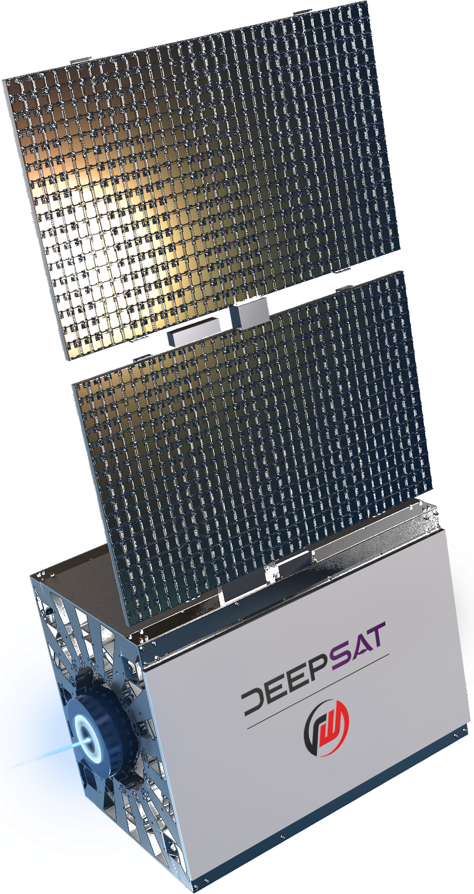
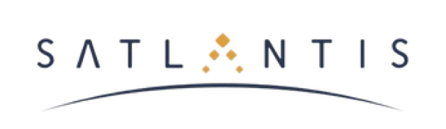
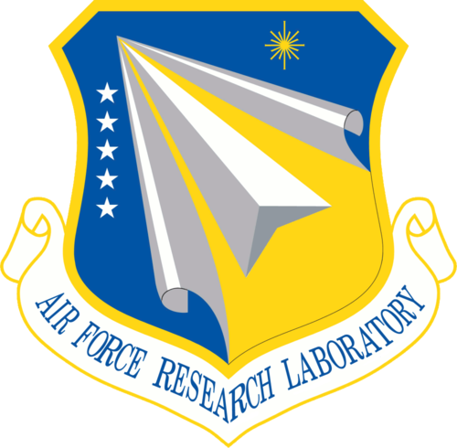

Col. Tim Trimailo, Director
Commercial Space Office, Space Systems Command
DeepSat is scheduled to launch a precursor satellite Q4 2027 on a SpaceX rideshare. The active PY26.1 STRATFI submission, due 29 May 2026, targets $30M in government matching funding. The time-sensitive ask of this meeting: COMSO to fund DeepSat through STRATFI directly, or champion DeepSat within SSC by introducing the right mission PAE signatory.
DeepSat is requesting this meeting to introduce Orion's Belt, the DeepSat VLEO ISR constellation, to COMSO; understand how DeepSat's trajectory aligns with COMSO's commercial integration mission; and build a direct working relationship. That includes how COMSO can support the active STRATFI submission and connect DeepSat with relevant PAEs for current and future opportunities.
Creating a new strategic layer of space infrastructure.
DeepSat is building Orion's Belt, an ISR constellation in Very Low Earth Orbit (VLEO) at 250 km altitude that drives rapid decisions for defense and national security operators. The operator receives actionable intelligence, not raw imagery. Onboard AI generates detections in milliseconds, and in-space backhaul delivers intelligence in under 30 seconds from capture to operator.
DeepSat is COTS-first by design. The platform is built around commercial systems: bus manufactured by Redwire, optical payload by Satlantis, onboard GPU by NVIDIA, laser inter-satellite communications via Kepler, and an environmental-data payload via NASA Goddard collaboration. Together producing a dual-use end-to-end intelligence service.



| Founded | 2024, Los Angeles, CA |
|---|---|
| Team | 10 people |
| Capital | $1.5M private + $1.25M non-dilutive (DAF D2P2) |
| Active Contracts | DAF Direct-to-Phase II SBIR (AFWERX) · MDA SHIELD IDIQ (Prime, $151B ceiling) · NASA Goddard LOI |
| Active Pursuits | PY26.1 SpaceWERX STRATFI · SSC STTR with USC ISI · pLEO SBIR with Raytheon BBN |
| First Flight (Precursor) | Q4 2027 SpaceX rideshare, TRL 8 pre-launch, TRL 9 in flight |
| Constellation Target | Initial operational capability 2028 → Target 500 satellites operational by 2030 for global coverage, AOR-prioritized for USINDOPACOM, USSOUTHCOM, USCENTCOM, and allies |
COMSO's mission is to integrate commercial capabilities into the Space Force architecture at speed. VLEO is an orbit that no current commercial ISR constellation operates from. Orion's Belt addresses a critical gap in the space infrastructure that defense, national security, and global trade depend on.
The product rests on three pillars:
DeepSat has active engagement with defense and national security customers relevant to COMSO's role in combatant command coordination:
DeepSat's PY26.1 SpaceWERX STRATFI submission is due 29 May 2026. A precursor satellite is scheduled to launch Q4 2027 on a SpaceX rideshare, achieving TRL 8 pre-launch through a series of technology maturation steps and TRL 9 in the operational space environment via the flight itself. From there DeepSat reaches initial operational capability in 2028 and scales toward a target 500-satellite constellation operational by 2030 for global coverage. The scale-out is AOR-prioritized, sequenced for USINDOPACOM, USSOUTHCOM, USCENTCOM, and allies.
| Milestone | Timing |
|---|---|
| STRATFI submission | 29 May 2026 |
| Payload integration with Redwire VLEO bus | FY26-27 |
| SOCOM Maritime TE characterization | August 2026 |
| Precursor launch on SpaceX rideshare (TRL 9) | Q4 2027 |
| Initial operational capability (IOC) | 2028 |
| Target 500-satellite constellation operational for global coverage | 2030 |
DeepSat's PY26.1 STRATFI submission is due 29 May 2026, and the team is grateful to COMSO for taking this meeting on short notice. The primary ask below is time-sensitive; the remaining two are parallel pathways that support it.